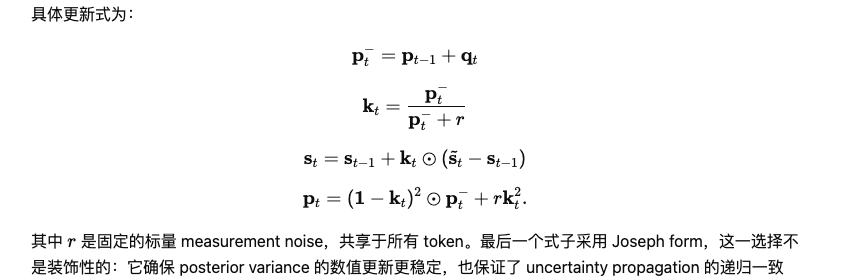
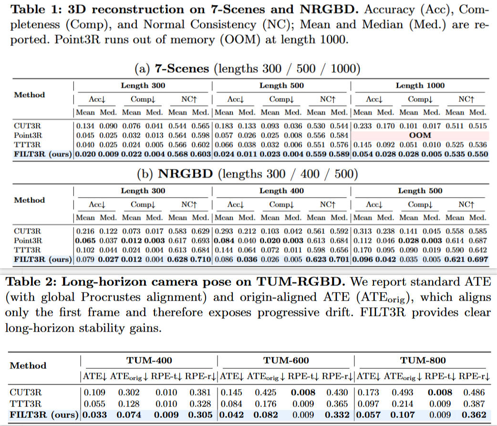
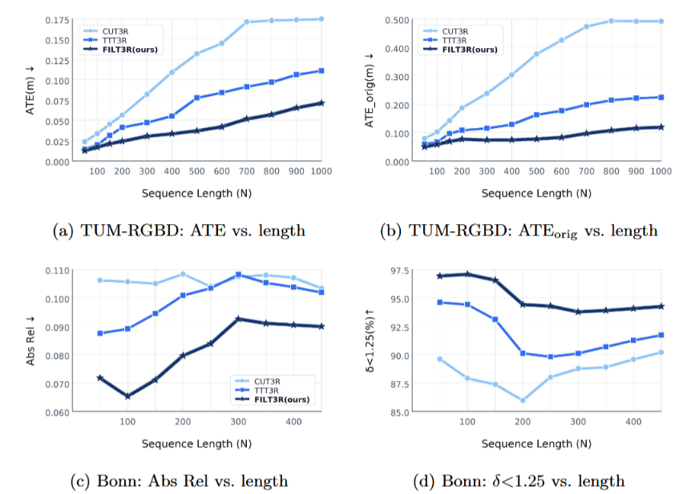
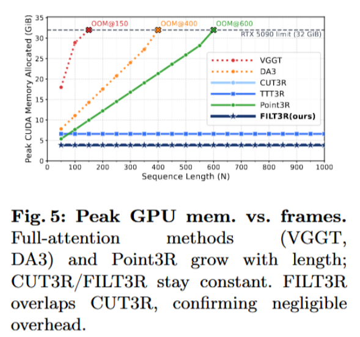
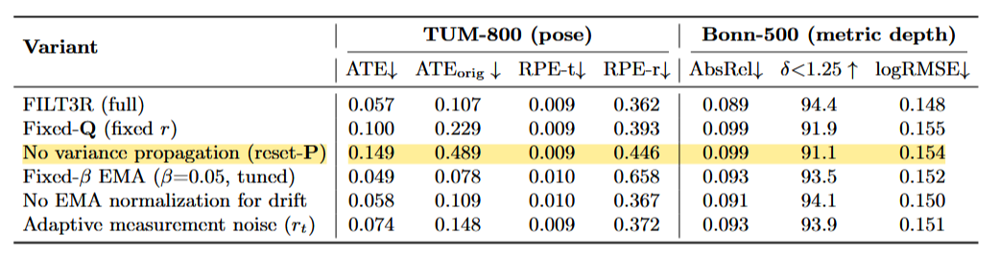

==CUT3R-followup；Training-free；==
跳过几何空间，在 latent belief state 上做滤波。本质上是一个 online state fusion layer，把 persistent state 写成 Kalman 递推。在 latent manifold 优化，控制 St 的更新速率，改变 decoder 看到的 scene belief，从而减少位姿漂移。
把 persistent-state 认为是 belief state, 把 decoder 产生的 candidate state 认为是 noisy measurement，于是得到 latent 空间的状态传播方程： st = st − 1 + wt, wt ∼ 𝒩(0,Qt) $$\tilde{\mathbf{s}}_t = \mathbf{s}_t + \mathbf{v}_t,\qquad \mathbf{v}_t\sim\mathcal{N}(\mathbf{0},\mathbf{R})$$

真正滤波的是 state token，st = st − 1 + kt ⊙ (s′t−st − 1) ，对于得到的候选 s′t 通过滤波来判断应该新增多少新观测。是在 st − 1 与 s′t 的增量上做滤波。先用 s′t 与 s′t − 1 来看这次的变化有多大， 不过还会和一个 ema 基线做商：$g_{t,i} = \frac{\Delta_{t,i}}{\Delta_\text{EMA}}$ 。把这个相对变化通过 sigmoid 映射成 process noise qt, i，每个 token 维护一个方差 pt, i 先根据 process noise 预测此刻方差，然后计算卡尔曼增益，根据增益选择性吸收 candidate state 的增量，并且更新这个 token 的不确定度。
CUT3R 就相当于 kt = 1。TTT3R 的 gate 是一个启发式的设计，不稳定。FILT3R 会根据历史的变化量，控制每次的更新幅度，如果已经很久都是稳定的，那它改变也会很克制，出现跳变才会短期快速更新一下。
Results
3DR：==长序列下，序列越长优势越大。== Point3R 在 NRGBD 上能好一些，但是再长就 OOM 了。
Pose：ATEorig 只对首帧对齐，更能看出来累积漂移。看得出来 FILT3R 确实有用。



消融实验中保留相同的增益形式但取消方差传播之后，没有置信度的累积，所以增益无法在稳定区间系统性缩小，这就会让噪声不断以一样的权重加入到状态里，自然就会让漂移更大更严重。